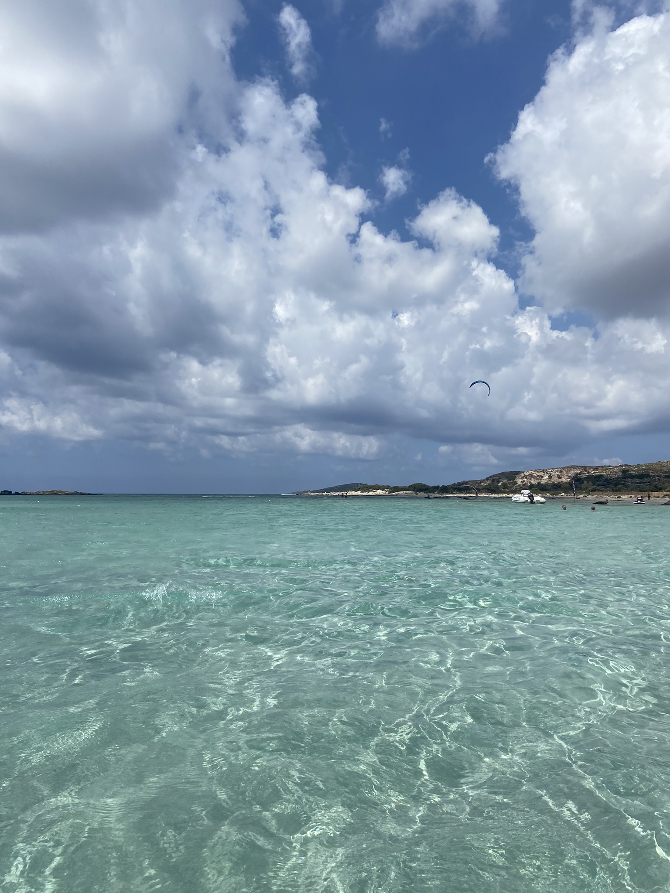
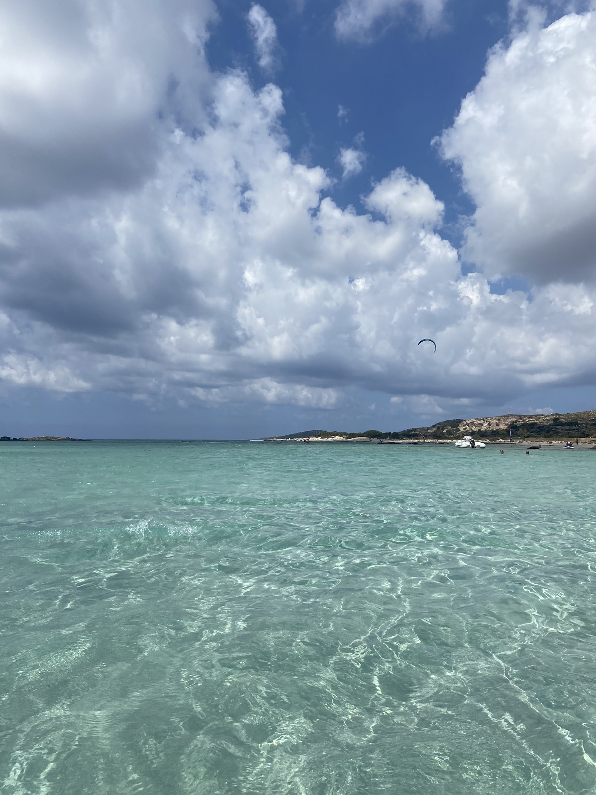
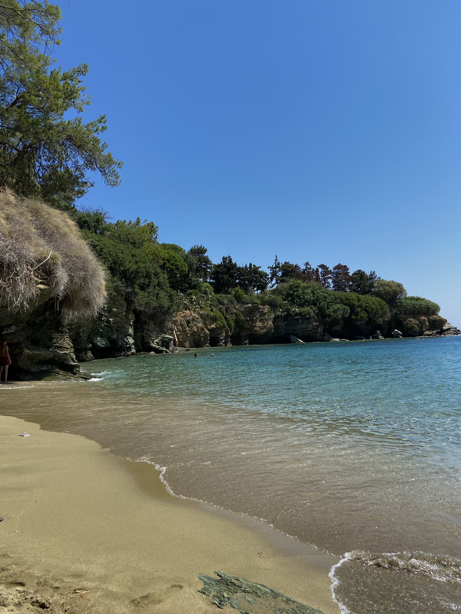
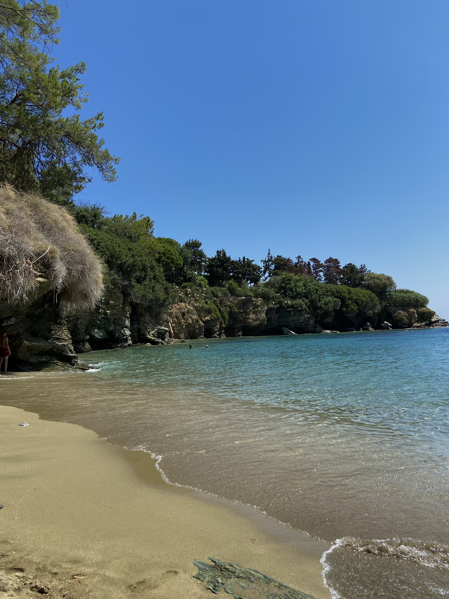
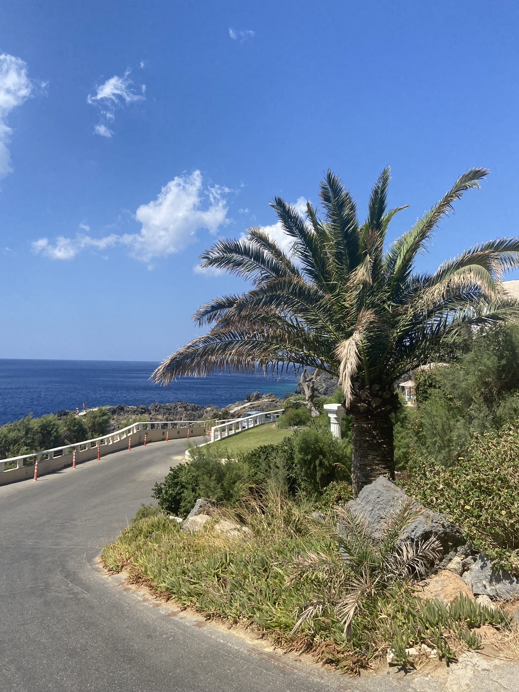
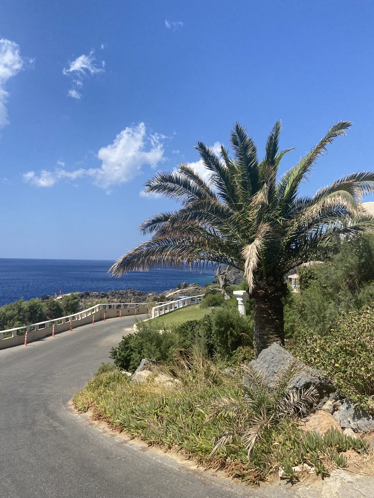
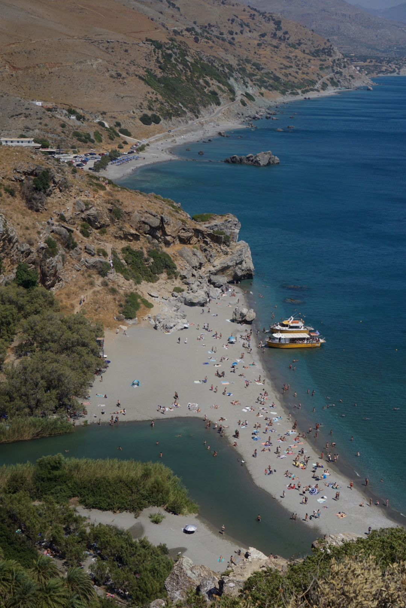
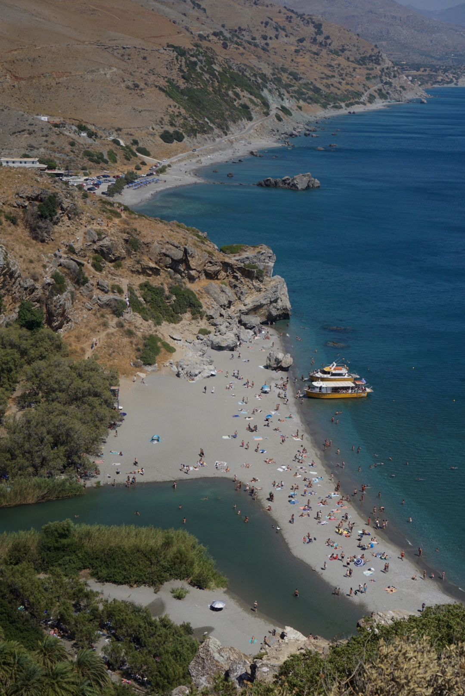

Crete, Greece
How many days in Crete?
SEVEN to TEN DAYS. The island of Crete is massive. It’s the largest in Greece both by size and population. You’d need a couple of weeks to cover the entire island at a relaxed pace, but for the purposes of visiting western Crete, I recommend seven days. Everything is pretty spread out, which means lots of day trips to different parts of the island.
When to visit Crete?
- JUNE, JULY, AUGUST (high season) - June is a wonderful month to visit for warm beach weather and a fewer people than July and August when tourism peaks. Hotel prices are at their highest this time of the year.
- MAY, SEPTEMBER, OCTOBER (shoulder season) - The shoulder months of the year offer better hotel prices and availability, and the chance to avoid the summer crowds. Weather in May and October can be hit and miss, but September is usually still pretty warm (my favorite month to visit).
- NOVEMBER-APRIL (low season) - You’ll avoid crowds this time of the year, but weather is too cold for the beach and during the off season a lot of the island is closed.
Places to visit:
BALOS LAGOON
The beautiful swirls of white sand and shallow blues offer some of the most stunning views on the west coast. It’s easiest to reach Balos Lagoon by boat tour, but also possible to drive if you have a 4×4, and then hike down to the beach.
CHANIA OLD TOWN
It’s one of the prettiest Old Towns in Europe, and certainly my favorite city in Greece. Chania weaves together narrow alleyways, pedestrian corridors and hidden squares to create a labyrinth that looks more Venetian than Greek. The colorful streets come alive in the evenings, my favorite time of the day to get lost in the winding corridors lined with charming shops, blooming bougainvilleas, lively bars and cozy tavernas.
ELAFONISI BEACH
The island’s most famous beach sits on the southern tip of western Crete. Elafonisi is stunning, a shallow lagoon of white and pink sand surrounded by shallows that sparkle turquoise when the sun is out. An early arrival is a must. The beach fills up very quickly with thousands of tourist.
FALASARNA BEACH
Falasarna sits on the island’s western tip, and thanks to the beach’s large size it never feels overly crowded. There are plenty of bars and sun beds scattered along Falasarna, but if you’re looking for a quieter experience, head to the peaceful north end of the beach where the nude sunbathers hang out, and lay claim to one of the secluded sparkling coves.
RETHYMNO OLD TOWN
This lovely little Old Town is a labyrinth of Venetian wonders on Crete’s north coast. The cobbled lanes of Rethymno are lined with picturesque tavernas, cozy wooden tables, pottery shops, churches, historic fountains, boutiques and more.

 

Where to stay?
CASA DELFINO (CHANIA)
My favorite place to stay in Crete is Old Town Chania amongst the labyrinth of pedestrian lanes. And one of the best upscale options in Old Town is Casa Delfino. The boutique hotel sits in a 17th century Venetian mansion, formerly the private home of the Delfino family. It now houses 24 distinct guest rooms and suites (the suites are the most spacious option). And the Chania waterfront location is ideal – walking distance to everything in Old Town.
CASA GIORGIO EXCLSUIVE SUITES (RETHYMNO)
Casa Giorgio Exclusive Suites is comprised of four luxury suites that sit inside a fully restored 17th century Venetian-Othoman structure. Rooms are classic, but modern and very clean – high wood ceilings, stone relief walls and glass enclosed showers. Suites share a rooftop plunge pool. The property is located on the edge of Old Town Rethymno, a quick five-minute walk to the centre.
LA CASA NOVE (CHANIA)
La Casa Nove is an apartment building that sits in the heart of bustling Old Town. It holds three units that have been completely renovated and modernized, but still retain an Old World charm. I love the use of blue throughout the apartment – the blue ceilings, balcony, wall trim, doors and windows contrast beautifully with the neutral stone walls. The apartments boast hard wood floors, high ceilings, walk-in showers and clean, modern furniture pieces. A great find.
KROKOS CRETE (RETHYMNO)
An absolutely lovely multi-level home located in the heart of Old Town Rethymno. This one-bedroom apartment is bursting with character – the charming kitchen, wood beam ceilings, stone walls, pastel green front door – lots of love went into the design of this home. Krokos Crete is small, but the smart use of space and the clean modern design make it wonderful little gem.

 

Where to eat?
7 THALASSES (RETHYMNO)
Upscale seafood restaurant that serves a variety of options including fresh fish, seafood carpaccio, mussels with pesto, lobster linguine, sushi and more. Reservations highly recommended.
BOHEME (CHANIA)
An all-day option in Old Town that serves breakfast, lunch and early dinner. Menu options include a range of delicious dishes including scrambles, baos, sandwiches, yogurts and burgers.
OASIS SOUVLAKI (CHANIA)
It’s cheap, delicious and quick. Oasis serves some of the tastiest gyros in Chania. The pita is fresh. The tatziki is flavorful. And the meat is perfectly grilled.
NOSTOS (RETHYMNO)
Another delicious seafood restaurant, this one with sea views in Rethymno. Menu highlights include the grilled sea bass, steamed mussels, langoustine and the selection of meze.
MOUTOUPAKI TAVERNA (CHANIA)
A lovely restaurant tucked away down a quiet alleyway in Old Town where dozens of tables fill an outdoor square with vines, jasmine and lights that hang overhead. Moutoupaki serves classic Greek dishes. Reservations recommended.
TAMAM (CHANIA)
Popular Chania restaurant for local Cretan cuisine. The restaurant is tiny, expect a bit of a wait!

 

More from CRETE ...

 
